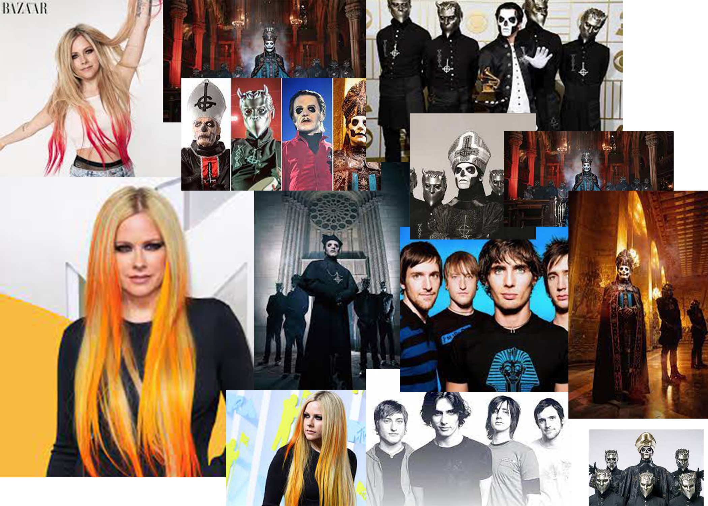

Hello! This is my website.
Since I was little I've ALWAYS loved music. One of my favorite artist's has always been Selena Gomez. One day I hope to have my own album just not for a while.
Here's to never growing up from Avril Lavigne came out in 2013. here's to never growing up is one of my favorite songs because no one wants to grow up unless your a kid who really wants to be an adult. Like the song title Here's to never growing up is about Avril Lavigne singing about that she still lives a life like teenagers.
This is Avril Lavigne, the band Ghost, and the band All American Rejects
What you don't know is that I LOVE THE 80's! One of my favorite songs from the 80's is Uptown girl from Billy Joel. Uptown girl came out in 1983. Uptown girl is the only song from Billy Joel that I know. Uptown girl is about Billy Joel singing about how he likes with girl from uptown and he's from downtown.

This is Toni Basil the person who sang Hey Mickey